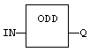
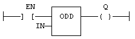

Function
Test if an integer is odd.
|
Name |
Type |
Description |
|
IN |
DINT |
Input value. |
|
Name |
Type |
Description |
|
Q |
BOOL |
TRUE if IN is odd. FALSE if IN is even. |
In LD language, the input rung (EN) enables the operation, and the output rung is the result of the function. In IL language, the input must be loaded before the function call.
Q := ODD (IN);

The function is executed only if EN is
TRUE.
